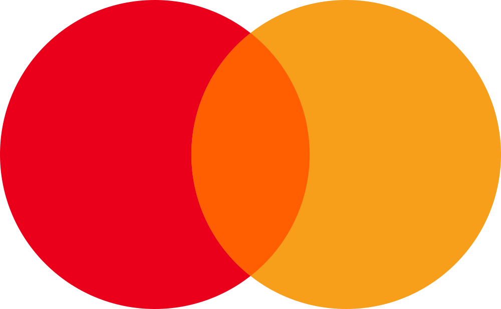

Data Intelligence Conference
Explore data governance, AI, analytics and the policies shaping Botswana’s digital economy.
See the programmeDATA INTELLIGENCE SUMMIT · BOTSWANA
DataX brings government, industry, innovators and investors together to turn Botswana’s digital infrastructure into better decisions and new investment.
THE DATAX EXPERIENCE
Explore data governance, AI, analytics and the policies shaping Botswana’s digital economy.
See the programmeSee AI, cloud and cybersecurity solutions in action through live showcases and immersive demonstrations.
Explore Day 2Meet pre-qualified start-ups and solution providers in scheduled one-on-one conversations.
Explore matchmaking
ABOUT DATAX
DataX connects public policy with the people building, buying and funding digital solutions. It gives Botswana’s core industries a place to put data to work and explore opportunities for regional digital trade.
The programme draws on Vision 2036, SmartBots, SADC digital priorities and the AfCFTA digital trade agenda.
EVENT PROGRAMME
Start with policy and infrastructure. Then explore practical applications, see technology in action and meet potential partners.
Follow the live view to see what is on stage right now and what comes next. All times are Gaborone time.
Collect your badge, meet exhibitors and settle in before the opening.
What DataX aims to achieve and what delegates can expect.
Elon Musk on satellite internet and what universal connectivity could unlock for Botswana.
Coffee and conversations in the expo hall.
Discuss readiness and responsibilities for digital services and cybersecurity implementation.
Lunch is served while the technology expo stays open.
Jensen Huang on the computing infrastructure behind AI and how Botswana can build on it.
Explore SmartBots, fibre, data centres, cloud and SADC digital integration.
Identify priorities and practical actions that can be tracked after the summit.
Key takeaways from the day, followed by drinks with speakers and delegates.
Badge collection for new delegates and an early look at the expo.
Mark Zuckerberg on open AI models, digital platforms and building for emerging markets.
Explore digital trade, enterprise case studies, cloud and data sovereignty, and fintech and payments.
Refreshments in the expo hall.
Experience immersive and VR demonstrations, creator-led showcases and facilitated networking.
Lunch and informal networking.
Meet pre-qualified ventures and capture opportunities for investment and commercial partnerships.
Commitments, follow-up actions and the road to DataX 2028.
SPEAKERS
Global technology leaders join policymakers, founders and investors on the DataX stage.
Founder and CEO, SpaceX
Connectivity for every community
{{icon:clock}} Day 1 · 09:45Photo: Gage Skidmore, CC BY-SA 4.0
 KEYNOTE
KEYNOTEFounder and CEO, NVIDIA
AI factories and accelerated computing for Africa
{{icon:clock}} Day 1 · 13:30Photo: The White House, public domain
 KEYNOTE
KEYNOTEFounder and CEO, Meta
Open AI and the next billion users
{{icon:clock}} Day 2 · 09:00Photo: The White House, public domain
FOR INVESTORS
DataX connects investors with pre-qualified start-ups and solution providers looking for capital, commercial partners and routes to market.
Discover selected founders and their solutions on the Innovation Lockout stage.
Express your interest in one-on-one meetings based on your investment focus, sector and preferred venture stage.
Continue promising conversations with founders, corporate buyers and potential commercial partners.
PARTNERSHIPS
Global technology, media and finance leaders supporting DataX.


Interested in partnering with DataX?
Become a partnerCONTACT DATAX
Contact Serge365 for DataX programme, investor and partnership enquiries.
.jpg){kind=link}
_(cropped).jpg){kind=link}
_(cropped_2).jpg){kind=link}